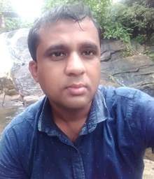

Handunneththi Lahiru Prasanga
Civil Engineer
27.06.1985
Sri Lankan
Acting Chief Engineer, Sri Lanka Land Development Corporation
| Experience | Position Held |
|---|---|
| Drainage master plan for Metro Colombo Urban Development Project (MCUDP) by drainage modeling (1D – 2D modeling) with modeling software of MIKE 11, MIKE 21, MIKE FLOOD, HEC HMS, HEC RAS including preparation of GIS database with all GIS operations, Flood risk assessment works and statistical hydrological works. | Modeling Engineer/Project Engineer |
| Preliminary hydraulic designs, structural and geo technical designs for culverts, weirs, gates, retaining walls, slope stability analysis and incorporating basic electromechanical aspects | Modeling Engineer/Project Engineer |
| Review of detailed designs and construction supervision of Ambathale storm water pumping station project (30 m3/s storm water pumping station). | Modeling Engineer/Project Engineer |
| Drainage modeling works for proposed Colombo elevated highway project (Client – RDA) | Modeling Engineer/Project Engineer |
| Involved in Supervision and maintaining of daily site works at the multi-story RCC building site of proposed quarters for Sri Lanka Air Force in Guwanpura, Colombo 08, under State Engineering Corporation of Sri Lanka | Site Engineer |
| Language | Speaking | Reading | Writing |
|---|---|---|---|
| Sinhala | Good | Good | Good |
| English | Good | Good | Good |
Wetlands Conservation and Management: a New Model for Urban Resilience in Colombo
I, the undersigned, certify that to the best of my knowledge and belief, these data correctly describe me, my qualifications, and my experience.